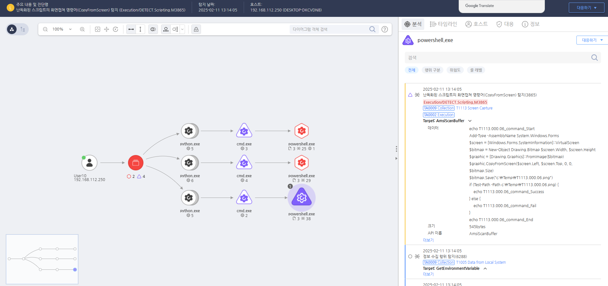

T1113.000.06 화면 캡쳐
D3FEND
MITRE ATT&CK 액션을 기준으로 대응 방안을 작성
Detection
파워쉘(Powershell) 스크립트의 화면캡쳐 명령어(CopyFromScreen) 실행을 확인합니다.
Detection(EDR)

https://172.18.10.125:8903/#/analysis/alert/67aad02b002dc6cc000003cb
Response
시스템에서 실행 중인 프로세스와 설치된 프로그램을 검사하여, 스크린샷 캡처 기능을 가진 악성코드를 탐지하고 제거합니다.
Mitigations
1. 화면 캡처 방지 도구 사용
- 화면 캡처 방지 소프트웨어를 사용하여 화면 캡처를 차단하거나, 캡처된 정보를 암호화하여 저장합니다.
- 보안 소프트웨어를 사용하여 비정상적인 화면 캡처 활동을 탐지하고 이를 차단합니다.
2. 응용 프로그램 및 시스템 접근 제어
- 애플리케이션 실행 제어를 통해 신뢰할 수 없는 프로그램이나 의심스러운 프로세스가 화면 캡처를 시도하는 것을 방지합니다.
- 최소 권한 원칙(Least Privilege)을 적용하여 사용자가 시스템이나 응용 프로그램에서 화면 캡처 기능을 악용할 수 없도록 제한합니다.
3. 사용자 권한 관리
- 시스템에 대한 관리자 권한을 제한하여 공격자가 화면 캡처 도구를 실행하거나 조작할 수 없도록 합니다.
- 원격 데스크탑 및 화면 공유 기능에 대한 권한을 최소화하여 사용자가 화면 캡처를 수행하거나 악용하지 않도록 합니다.
4. 화면 보호기 및 잠금 화면 설정
- 화면 보호기 설정 및 자동 잠금 화면을 활성화하여 사용자가 장기간 시스템을 사용하지 않으면 화면이 자동으로 잠기게 만듭니다.
- 비밀번호 보호와 스크린 잠금을 설정하여 화면 캡처나 외부 접근을 방지합니다.
5. 보안 교육 및 인식 제고
- 사용자 교육을 통해 화면 캡처의 위험성과 민감한 정보가 화면에 노출될 수 있음을 인식시킵니다.
- 보안 의식 교육을 통해 사용자가 화면 캡처를 사용하거나 시스템을 악용하는 행동을 방지할 수 있도록 유도합니다.
6. 원격 접근 및 화면 공유 관리
- 원격 데스크탑 서비스 및 화면 공유 소프트웨어의 사용을 제한하고, 이를 안전하게 구성하여 공격자가 원격으로 시스템을 제어하거나 화면을 캡처하는 것을 방지합니다.
- 원격 접근을 VPN을 통해 제한하고, 인증 절차를 강화하여 외부 공격자가 화면을 캡처할 수 없도록 합니다.
Affected Techniques
Action 실행시 함께 영향을 받는 다른 Techniqes
| D3FEND |
| D3-FA File Analysis |
| D3-SCA System Call Analysis |